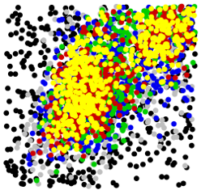
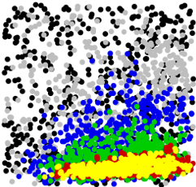

A Tool for Parameter Inference and Model Selection |
||||
By Juliane Liepe, Chris Barnes, Erika Cule, Paul Kirk, Kamil Erguler, Tina Toni, Michael Stumpf |
||||
NEWS 07/06/2010: ABC-SysBio Version 1.0 released 16/04/2010: ABC-SysBio Version 0.4 released
|
||||
|
 |
Contacts: christopher.barnes@imperial.ac.uk juliane.liepe08@imperial.ac.uk m.stumpf@imperial.ac.uk |
 |
||
|
The growing field of systems biology has driven demand for flexible tools to model and simulate biological systems. One established problem in the modeling of biological processes is the estimation of associated parameters. A number of statistical approaches, both frequentist and Bayesian, have been proposed to estimate parameters given biological data and a proposed model. ABC-SysBio implements likelihood free parameter inference and model selection in dynamical systems. It is designed to work with both stochastic and deterministic models written in Systems Biology Markup Language (SBML). ABC-SysBio is a Python package that combines three algorithms: ABC rejection sampler, ABC SMC for parameter inference and ABC SMC for model selection.
Relevant publications: J. Liepe, C. Barnes, E. Cule, K. Erguler, P. Kirk, T. Toni, M. P.H. Stumpf (2010) T. Toni and M.P.H. Stumpf (2010) T. Toni, D. Welch, N. Strelkowa, A. Ipsen, M.P.H. Stumpf (2009) J. Pritchard, M.T. Seielstad, A. Perez-Lezaun, M.W. Feldman (1999)
Disclaimer The packages in the project are still under development. If you want help, think you have found a bug or have any other enquiries about a package it should be directed towards one of the authors. There are no restrictions on the use of this code except that the developers take no liability for any problems that may arise from its use. The software is provided as is, without warranty of any kind. |
||||